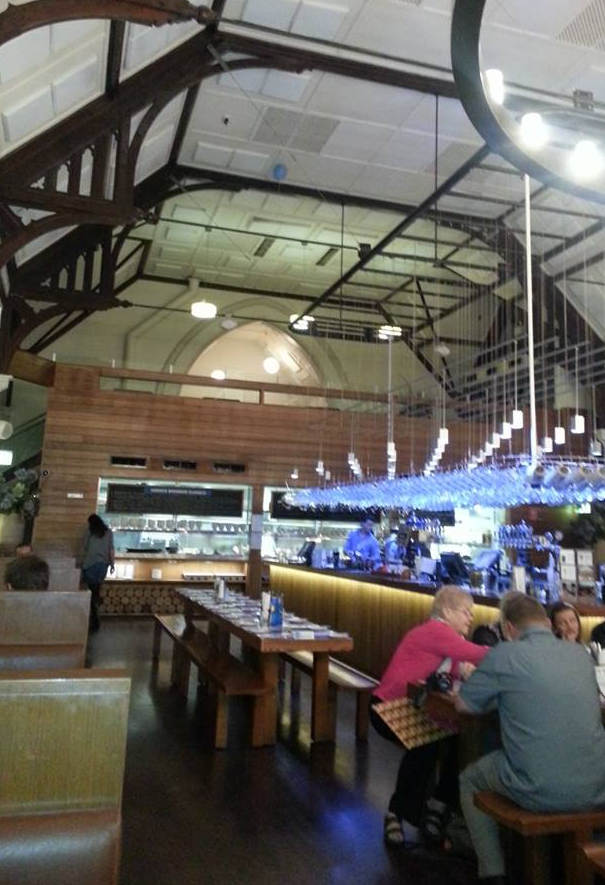
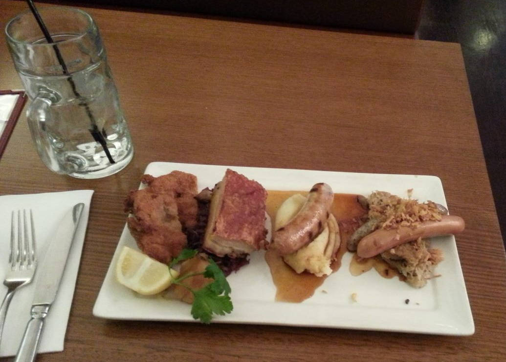

Take bavarian tasting platter at Bavarian Bier Cafe Parramatta
2013-08-19 09:29
|
Source
Tags :
cuisine
en
restaurant
Location at google map
"platter" means different kinds of foods in one big platter
sausage is good
$31

Previous post
Next post
Please enable JavaScript to view the
comments powered by Disqus.
Comments powered by
Disqus